Phase 2 · Clinical materials · Lecture 08 · Part 0
The Language of
Material
Properties
Nine properties, defined one at a time, each followed by its own examples. This is the vocabulary the rest of the lecture — and the rest of the course — is written in.
Context · Before the vocabulary
The procedure these properties describe
Every property in this section is a question about one step of this sequence.
1 · TrayA rigid carrier, shaped like an arch, holds the soft material and takes it to the teeth.
2 · ImpressionThe material is pressed against the teeth and sets. Removed, it is a negative copy.
3 · PouringGypsum, a plaster slurry, is poured into the negative and left to harden.
4 · Cast and dieThe hardened gypsum is a positive copy of the mouth.
5 · RestorationA crown is built on that copy, in the laboratory.
6 · FittingThe crown goes to the patient. It fits the copy. Whether it fits the tooth is the question.
Scope of this lectureThe patient's mouth is measured once, at step 2. Everything after that is a copy of a copy. An error introduced at step 2 is inherited by every later step, and is not discovered until step 6.
Context · Vocabulary of the procedure
Six words used throughout this lecture
These are the terms the definitions rest on. They are not properties — they are the objects the properties are about.
Tray
The rigid arch-shaped carrier that holds the unset material and takes it to the teeth.
Impression
The set material after removal: a negative of the mouth, with a hole where each tooth was.
Cast and die
The hardened gypsum poured into the impression is the cast, a positive copy. The portion reproducing one prepared tooth is the die.
Prepared tooth
A tooth reshaped with a drill so that a restoration can be fitted over it.
Margin
The boundary line where the restoration will end and the tooth surface begins. The hardest feature in the mouth to record, and the one that decides whether a crown succeeds.
Gingival sulcus
The shallow groove between tooth and gum. Margins are often placed at, or just inside, it — which is why the material has to reach in there.
Context
Why the properties come before the materials
A comparison is only informative once both sides of it are understood.
An impression is a dimensional record
A soft material is placed against the teeth, becomes solid, and is removed carrying a negative copy of them. Every property in this section describes one way that record can be gained, kept or lost.
- Each property answers one question, at one moment of the procedure.
- The properties are not interchangeable. A material can be excellent at one and poor at another — which is why a table is needed rather than a ranking.
- Every term is defined in an international standard, and the clause number is given, so the definition can be looked up rather than remembered.
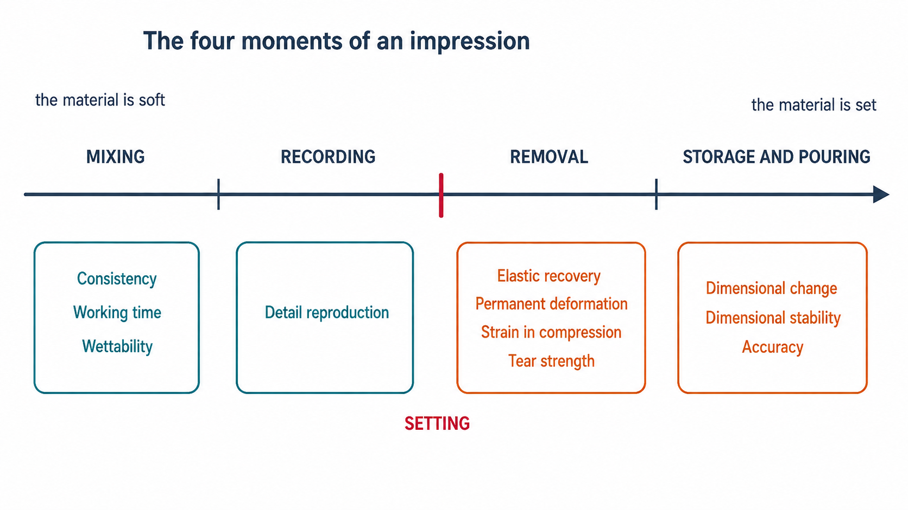
The properties grouped by the moment at which each one acts.
Context · Map
The nine properties and the question each one answers
The four groups follow the sequence of the procedure.
1 · MixingConsistencyHow thick is the mixed paste?
2 · MixingWorking & setting timeHow long can it be shaped, and when is it safe to remove?
3 · MixingWettabilityDoes it spread over a moist surface?
4 · RecordingDetail reproductionWhat is the finest line it can copy?
5 · RemovalElastic recovery &
permanent deformationHow much of its shape does it get back — and how much not?
6 · RemovalStrain in compressionHow much does it give under a load?
7 · RemovalTear strengthWhat force tears it where it is thinnest?
8 · Storage and pouringDimensional change &
stabilityDoes the record hold, and in which direction does it drift?
9 · Storage and pouringAccuracyIs it close to the truth, and does it repeat?
Group 1 of 4
01
Before the material sets
Consistency· Working and setting time· Wettability
Property 1 · Definition
Consistency
How thick or runny the freshly mixed material is.
Consistency
How readily a freshly mixed material flows, or resists flowing, under a given load.
Important qualificationIt is a property of the unset paste only. Once the material has set, consistency no longer exists as a measurable quantity — the property that replaces it is strain in compression, defined later in this lecture.
ISO 4823, clause 3.1.
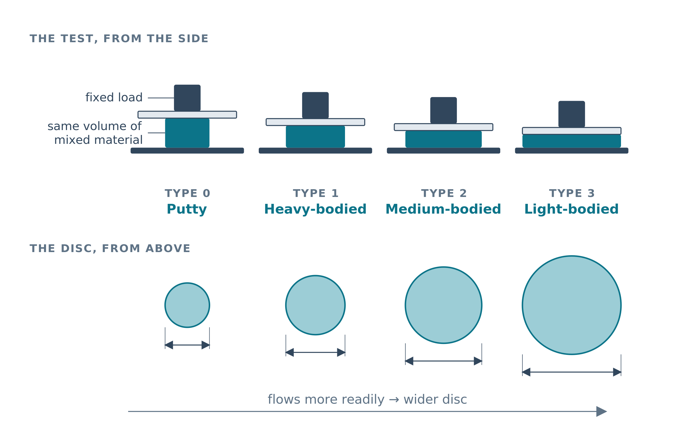
Same volume, same load: the disc that spreads wider is the runnier material.
Property 1 · Example
Consistency in everyday materials
Three kitchen materials under the same push.
Honey
- Flows on its own, under its own weight.
- Finds every crack and corner.
- Will not stay where it is put.
Toothpaste
- Flows when pushed, stops when the push stops.
- Holds a ridge.
Modelling clay
- Barely moves under the same push.
- Keeps whatever shape it is given.
- Pushes back on whatever is next to it.
InterpretationAll three are the same property at three values. An impression material is chosen along exactly this scale — and the choice decides where in the mouth that material can be used.
Property 1 · Example
The four consistencies of impression material
Consistency is the single measurement that assigns a material to a type.
| Type | Name | Where it goes |
|---|
| 0 | Putty | Stiffest. Loaded in the tray, compresses the others into place |
| 1 | Heavy-bodied | Tray material |
| 2 | Medium-bodied | General purpose, tray or syringe |
| 3 | Light-bodied | Runniest. Syringed around the margin |
ISO 4823, clause 4. Measured as the diameter of a disc formed when a fixed volume is compressed under a fixed load: runnier material, wider disc.
NoteThe type is not a quality grade. A putty and a light body are not a worse and a better material — they are two jobs. The standard judges each type against a different requirement for detail reproduction, precisely because only one of them is expected to record the margin.
Property 1 · Clinical example
Why two consistencies are used in the same impression
The two requirements cannot be met by one material.
The runny one
- Delivered from a syringe directly around the prepared tooth.
- Must reach into the gingival sulcus to capture the margin.
- On its own it would collapse and flow away from the tooth.
The stiff one
- Fills the tray behind it.
- Pushes the runny material into the sulcus and holds it there.
- On its own it could never reach the detail.
Practical consequenceA single impression is normally made with two materials at once, set simultaneously against each other: one runny enough to reach the margin, one stiff enough to drive it there.
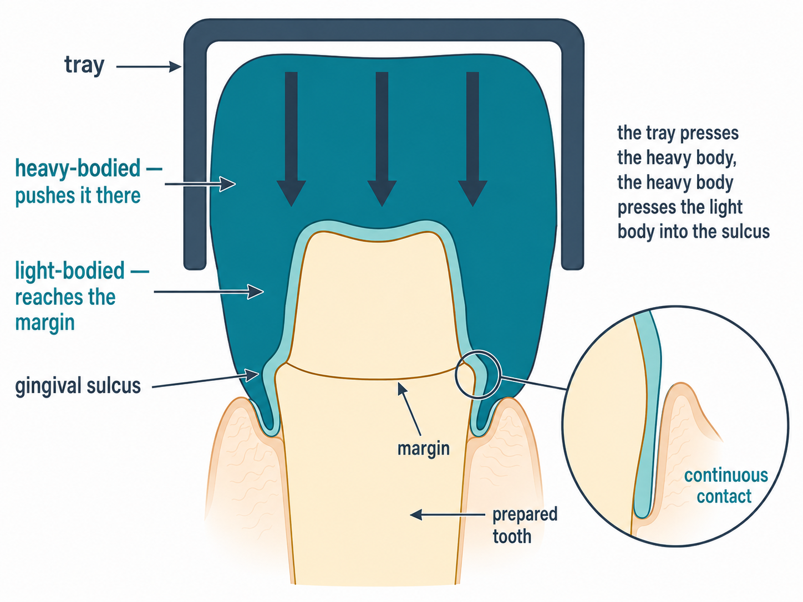
The heavy body presses the light body into the sulcus; neither would work alone.
Property 2 · Definition
Working time
The window in which the material can still be shaped.
Working time
The period that begins when mixing starts and ends when the material begins to behave elastically — when it springs back instead of flowing, and can no longer be shaped without damaging the record it will carry.
Important qualificationWorking time ends before the material feels hard. Anything shaped after that moment records a distorted surface, even though the paste still looks and feels workable.
ISO 4823, clause 3.11.
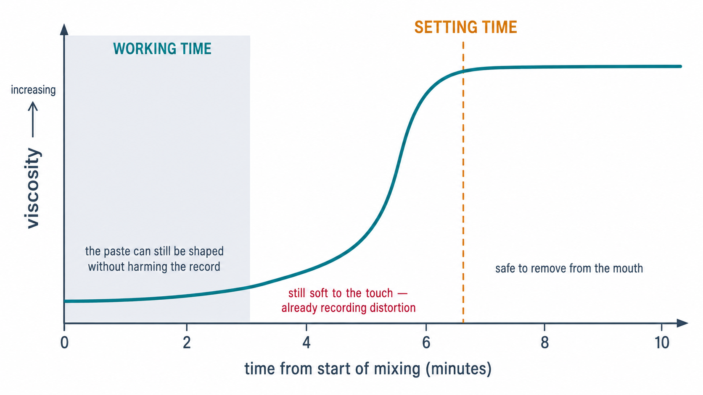
Both clocks start at mixing. The first closes while the paste still feels soft.
Property 2 · Definition
Setting time
The second clock, running from the same moment.
Setting time
The period from the start of mixing until the reaction has progressed far enough for the material to be removed from the mouth without deforming.
NoteThe standard sets no required value for either time. It requires the material to perform as the manufacturer states — so these are numbers to read on the box, not values to memorise. The order of magnitude is minutes: roughly two to ten, depending on the material.
ISO 4823, clause 5.4.
Practical consequenceTwo clocks, one start. The operator races the first one; the patient waits out the second. A material with a long working time and a short setting time would be ideal, and no material offers both, because they are the same reaction measured at two points.
Property 2 · Example
Setting concrete has the same two clocks
A familiar material where the two moments are far apart enough to see.
Concrete
- There is a window in which the surface can still be smoothed.
- That window closes while the concrete still looks wet.
- Long after it closes, the slab is still not safe to walk on.
- Smoothing it after the window has closed leaves a permanently spoiled surface.
Impression material
- There is a window in which the tray can still be seated and adjusted.
- That window closes while the paste still feels soft.
- After it closes, the material still needs time before it can be removed.
- Reseating the tray after the window has closed records a permanently distorted surface.
InterpretationThe difference is the timescale: hours for concrete, minutes for an impression. The mistake is the same one, and in the mouth there is no chance to notice it before the material is removed.
Property 3 · Definition
Wettability
Whether the unset material spreads over a surface or beads up on it.
Wettability
The tendency of a liquid to spread across a solid surface rather than draw itself into a bead.
Contact angle
The angle between the surface and the edge of a drop resting on it. Small angle, good wetting — the drop flattens and follows the surface. Large angle, poor wetting — the drop stands up on itself.
Not among the requirements of ISO 4823. Reported by manufacturers as a contact angle in degrees.
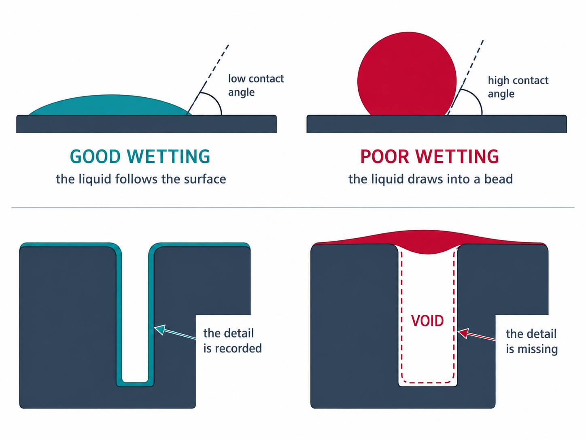
The same surface, two liquids — and the void that poor wetting leaves at the margin.
Property 3 · Example
Why poor wetting shows up as a missing margin
The consequence is not a blurred record. It is an absent one.
Good wetting
- The material follows the tooth into the sulcus.
- It stays in contact all the way down.
- The margin is recorded.
Poor wetting
- The material bridges over the entrance of the sulcus.
- A void is left underneath.
- The margin is not recorded at all — and the impression looks smooth.
Practical consequenceWetting matters twice in the procedure. The material must wet the moist tooth at step 2, and the set impression must be wetted by the gypsum poured into it at step 3. A void at either moment produces the same result: a die with no margin on it.
Important qualificationA material described as hydrophilic wets a moist surface more readily. That is not the same as tolerating blood or saliva pooled on the tooth — no impression material records through a liquid layer.
Group 2 of 4
02
At the moment of recording
Detail reproduction· And why it is not the same as accuracy
Property 4 · Definition
Detail reproduction
The finest line the material can copy without the copy breaking up.
Detail reproduction
The ability of a material to reproduce a fine line engraved in a test block, continuously and without interruption, along its whole length.
ISO 4823, clauses 5.5 and 7.4.
NoteIt is a pass or fail, not a score. The line is either continuous or it is not.
InterpretationDetail reproduction depends on the two properties already defined: the material must be runny enough, and wet the surface well enough, to reach the detail before it becomes elastic. It is not an independent virtue of the material — it is what consistency and wettability deliver together.
Property 4 · Example
Pressing a coin into modelling clay
The everyday version of the same test.
- The coin is the tooth. Its surface carries features far finer than its overall shape.
- The clay is the impression material. Whether the lettering comes out readable depends on how finely the clay follows the surface before it stiffens.
- Press too late and the lettering is missing, even though the outline of the coin is perfect. The overall shape was recorded and the fine detail was not.
- Nothing about this is a measurement of size. The lettering can be perfectly sharp on a clay disc that has since shrunk.
InterpretationThis is why detail reproduction is judged by looking, under a microscope, at one small area — and not by measuring anything.
Property 4 · Why it matters
Why 20 micrometres is the number that matters
The requirement is not an arbitrary figure chosen by a committee. It is the scale at which the margin actually lives. Every object on this scale is real, and they are all within a factor of a hundred of each other.
Property 4 · Why it matters
Three things that share this scale
What has to be recorded, what seals the margin, and what colonises it.
What must be recorded
- The finish line left by the drill — another name for the margin.
- The step between tooth and restoration.
- The roughness of the prepared surface.
- Features of tens of micrometres, not of millimetres.
What seals the margin
- A luting cement — the thin layer that fixes the finished crown onto the tooth — must form a film no thicker than 25 µm.
- That is almost exactly the 20 µm the impression must record.
- A gap the material failed to record is a gap the cement was never designed to fill.
What colonises the margin
- An oral bacterium is roughly 1 µm across.
- Twenty fit side by side across a 20 µm discrepancy.
- For comparison, a dentinal tubule near the pulp is about 2.5 µm.
General ruleDetail that is not recorded cannot be recovered later. No step after the impression adds information that the impression did not capture.
Line widths: ISO 4823, Table 1. Cement film thickness: ISO 9917-1 (maximum 25 µm for luting cements). Dentinal tubule diameter: Garberoglio & Brännström, Arch Oral Biol 1976 — 2.5 µm near the pulp, 0.9 µm at the periphery.
Property 4 · Qualification
Why the requirement is not the same for every material
Three different thresholds, because the three materials are not being asked the same question.
| Type | Line it must reproduce | Where it sits in the impression |
|---|
| 3 · light-bodied | 20 µm | Syringed at the margin |
| 2 · medium-bodied | 20 µm | May be at the margin |
| 1 · heavy-bodied | 50 µm | In the tray, behind the light body |
| 0 · putty | 75 µm | In the tray, carrying the others |
ISO 4823, Table 1.
InterpretationThe putty is not a worse material. It is not the one being asked this question — it never reaches the margin, so the standard does not require it to record one.
NoteThe standard applies a second requirement to the gypsum cast poured against the impression: 50 µm for types 1, 2 and 3. Detail is lost in the transfer, and the standard already assumes it.
Property 4 · Qualification
Detail reproduction is not accuracy
The most common confusion in this topic. Accuracy is defined properly in Group 4; for now, read it as being the right size, in the right place.
Detail reproduction
- A property of the surface.
- Asks: can this material copy a fine line?
- Judged by looking at one small area.
- Governed by flow before setting.
Accuracy
- A property of the distance between two points.
- Asks: is this feature in the right place?
- Judged by measuring across the whole impression.
- Governed by what happens during and after setting.
InterpretationAn impression can reproduce a 20 µm line perfectly and still produce a crown that does not fit — because every detail it recorded has moved together, in the same direction, after it was recorded.
Property 4 · Qualification
Sharp, and in the wrong place
On the left, the margin is recorded perfectly. On the right, every tooth of the arch is drawn just as sharply — and the whole arch has contracted. Nothing about the second picture is blurred. That is exactly the point: the two properties fail independently.
Group 3 of 4
03
During removal from the mouth
Elastic recovery and permanent deformation· Strain in compression· Tear strength
All three describe the same underlying behaviour: a material that is part liquid and part solid, so that part of any deformation is returned and part is kept.
Property 5 · Definition
Elastic recovery
How much of its shape the set material gets back.
Elastic recovery
The ability of an elastic material to return to its original shape once the load deforming it has been removed. Expressed as the percentage of the deformation that is recovered.
DefinitionMeasured by compressing a cylindrical specimen by a fixed percentage of its height for a few seconds, releasing it, and re-measuring.
ISO 4823, clause 3.2 (definition) and 7.7 (test method).
InterpretationNote what the percentage is a percentage of: the deformation that was applied, not the size of the object. A material that recovers 98% of a large deformation still ends up further from its original shape than one that recovers 98% of a small one.
Property 5 · Definition
Permanent deformation
The same measurement, stated from the other side.
Permanent deformation
The percentage of the deformation that is not recovered.
permanent deformation = 100% − elastic recovery
- A material with 98% elastic recovery has 2% permanent deformation.
- They are not two properties. They are one measurement with two names, and different textbooks pick different ones.
Important qualificationBoth numbers are percentages of the deformation applied. To find out what they cost in the die, that percentage has to be applied to the deformation, and then to the size of the tooth. That calculation is done once, in full, three slides from now.
Property 5 · How it is measured
How the percentage is measured
Four steps, and one thing to watch: what the percentage is a percentage of.
Property 5 · Mechanism
Why the material springs back at all
And why it never springs back completely.
Property 5 · Example
Two everyday materials at the ends of the scale
Impression materials sit near one end, and never quite at it.
A hair elastic
- Stretched around a handful of hair, then released.
- Returns to almost exactly its original shape.
- Can be used again the same way tomorrow.
- Elastic recovery close to 100%.
Chewing gum
- Pulled into a new shape, then released.
- Keeps whatever shape it was pulled into.
- Every deformation is inherited by the next one.
- Elastic recovery close to zero.
InterpretationAn impression material sits near the elastic end — typically 96% to 99.5% — but never at it. Every impression keeps a little of whatever deformation it went through, and the whole of Group 3 is about how much.
Property 5 · Example
Why an impression is deformed at all
The material is deformed on its way out of the mouth, every single time, by the shape of the tooth itself.
- A tooth is not a cone. It is narrow at the neck, bulges outward, and narrows again towards the biting surface.
- The region beneath the bulge is the undercut. Set material that has flowed into it is trapped behind a wider ring of tooth.
- To come out, the material must stretch over the bulge and then relax back.
- Whatever it fails to relax back becomes an error in the die — and the die is what the crown is built on.
General ruleDeformation on removal is not a mistake by the operator. It is a geometric necessity, and the only variable is how much of it the material gives back.
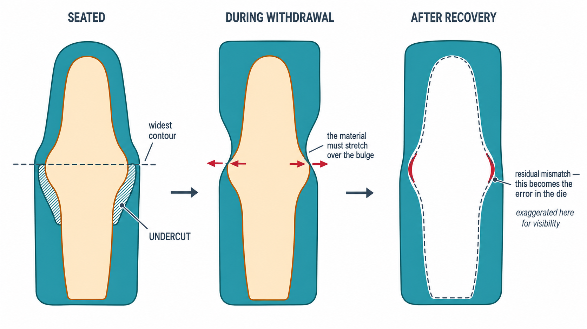
The material has to stretch over the widest contour. What it fails to recover becomes the error in the die.
Property 5 · Worked example
What 96.5% recovery costs on one molar
The calculation, done once, with every assumption stated.
Start with the material
96.5% elastic recovery — the minimum the standard allows for an elastomeric impression material.
Read it as permanent deformation
100% − 96.5% = 3.5% of the deformation is kept.
Apply it to the deformation on removal
Assume the undercut forces the material to stretch by 20% of its own thickness. It keeps 3.5% of that stretch: 3.5% of 20% = 0.7%.
Read what that 0.7% is a percentage of
It is 0.7% of the dimension the material was recording — so the cavity in the impression, and the die poured into it, sit 0.7% away from the tooth.
Apply that to a real tooth
A molar is roughly 8 mm across. 0.7% of 8 mm = 56 µm of error, carried into the die.
Methodological limitationThe 20% deformation and the 8 mm span are teaching assumptions, not measured values. The recovery figure is the standard's minimum. The purpose of the calculation is the order of magnitude, not the exact number.
InterpretationA figure that reads as almost perfect on a data sheet — 96.5% — arrives at the die as tens of micrometres. This is the reason the properties in this lecture are worth defining carefully.
Property 5 · Worked example
The same calculation for a better material
Same tooth, same undercut, same deformation. Only the material changes.
| Elastic recovery | Permanent deformation
(of the deformation) | Of the original dimension
(at 20% deformation) | Error over 8 mm |
|---|
| The standard's minimum | 96.5% | 3.5% | 0.70% | 56 µm |
| A well-performing material | 99.5% | 0.5% | 0.10% | 8 µm |
| Difference between the two | 48 µm |
InterpretationA difference of three percentage points on the data sheet becomes a difference of 48 µm in the die. For scale, 120 µm has been the figure conventionally quoted as an acceptable marginal gap since 1971 — a threshold on which the literature has never actually reached consensus, with values from 50 to 200 µm proposed. Against a budget of that size, the choice of material spends a substantial part of it.
Illustrative calculation with the assumptions of the previous slide. The 120 µm figure originates in a 1971 measurement of cement film thickness, not in a clinical survival study.
Property 6 · Definition
Strain in compression
How much the set material gives when it is squeezed.
Strain in compression
The amount a set material deforms under a defined compressive load, expressed as a percentage of its original height. It is the everyday flexibility of the set impression.
NoteThis is the same idea as the elastic modulus met in Lecture 02, read the other way round: modulus is stress divided by strain, so a high strain under a fixed load means a low modulus. The standard reports the strain directly because the clinically relevant question is how far the impression gives, not how stiff the material is in absolute terms.
ISO 4823, clause 3.10 (definition) and 7.8 (test method).
General ruleThis is the only property in this lecture specified as a range, with both a minimum and a maximum. Everywhere else, more is better or less is better. Here, both extremes fail — in different ways, at different steps of the procedure.
| Type | Minimum | Maximum |
|---|
| 0 putty · 1 heavy | 0.8% | 20.0% |
| 2 medium · 3 light | 2.0% | 20.0% |
Property 6 · How it is measured
The strain-in-compression test
The same specimen and a similar load, but measured at a different moment: strain in compression is read with the load still on, while elastic recovery is read after it comes off. And the denominator is different — here it is the original height h₀.
Property 6 · Example
What happens when the material is too flexible
The failure occurs at step 3, after the impression has left the mouth, and it is caused by the gypsum growing — not by the gypsum weighing.
- Gypsum expands as it sets. The reaction grows crystals, and the standard permits up to 0.20% for model stone and 0.15% for die stone.
- Across an arch, that is a real distance. 0.20% of a 50 mm intermolar width is 100 µm.
- The impression and the tray act as a corset around it. A stiff material restrains the expansion; a flexible one lets it happen.
- So the cast comes out larger than the mouth — wider arches, larger dies — and the impression itself is still correct.
Expansion limits: ISO 6873, Table 1.
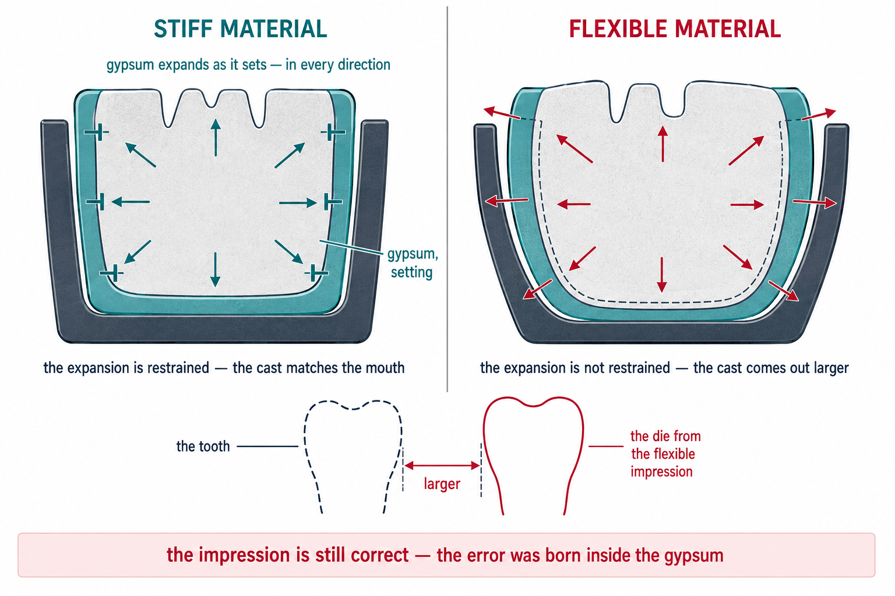
The gypsum expands as it sets. A stiff impression restrains it; a flexible one does not.
Property 6 · Example
What happens when the material is too stiff
The failure occurs at separation, and the standard's lower limit exists to protect the patient's tissues.
- A stiff impression grips the cast. Separating the two can fracture the slender parts of the gypsum — a thin die, an unsupported tooth — and the fracture is in the model, where the crown will be built.
- The standard sets a lower limit for exactly one reason: the set material must be flexible enough to leave the mouth without injuring the tissues it was pressed against. That is the wording of the definition itself.
- Force applied to a set impression is a route to distortion wherever it comes from.
ISO 4823, clause 3.10 and Table 1.
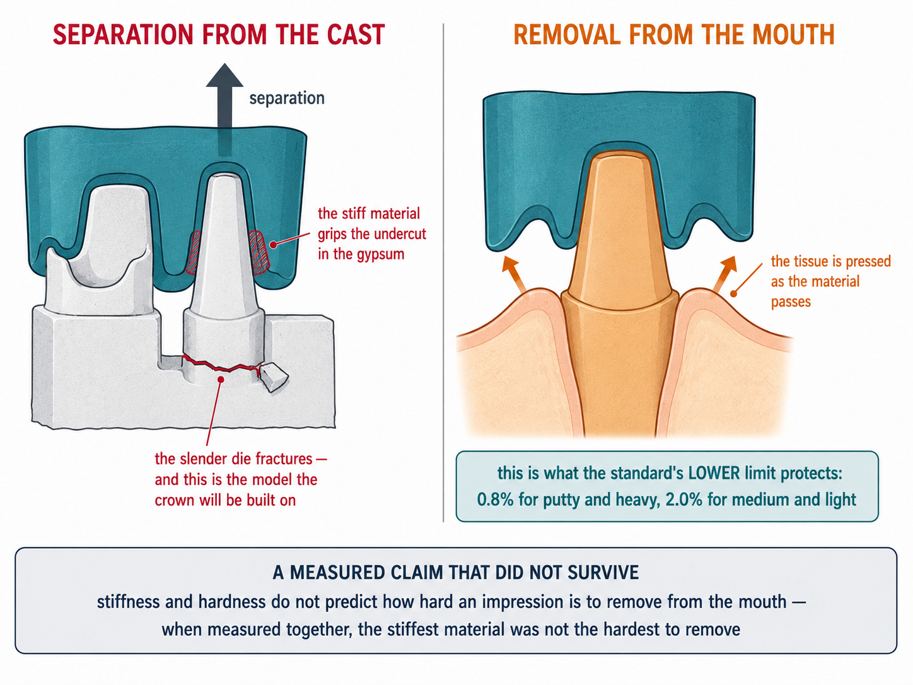
Excess stiffness fractures the die at separation. Removal force is a different question.
Property 6 · Important qualification
Stiffness does not predict how hard an impression is to remove
A claim taught for decades, measured directly, and not supported.
NoteThree material names appear below. They are the three families compared throughout Part 3, and for now only one thing about them matters: they are chemically different materials. Addition silicone and polyether are two of the elastomers; alginate is the cheap water-based one used for study models.
What was expected
- A stiffer, harder material should grip the undercuts more.
- It should therefore need more force to pull off the teeth.
- Manufacturers reformulated materials to be less rigid for exactly this reason.
What was measured
- No correlation between removal force and either rigidity or hardness.
- The addition silicone was the stiffest and hardest of the three.
- The polyether needed the most force to remove.
Walker MP, Alderman N, Petrie CS, Melander J, McGuire J. J Prosthodont 2013;22(5):362-6. In vitro, n=5 per group, standardised steel model with a metal tray — no soft tissue and no saliva.
InterpretationWhat actually governs removal force is the depth of the undercuts and how strongly the material adheres to the surfaces it is pressed against — not how stiff it is. The polyether is the most hydrophilic and the most adherent of the three, and that is the property doing the work.
General ruleA mechanism that sounds plausible is not evidence. This is the second claim in this lecture that survives as a rule of thumb while failing as an explanation — and the difference matters whenever a new material has to be judged.
Property 7 · Definition
Tear strength
The force needed to tear the set material.
Tear strength
The force required to propagate a tear through the set material, divided by the thickness of the specimen. Reported in newtons per millimetre.
NoteWhy N/mm and not MPa: a tear runs along a line, not across a face. The force is carried by the thickness at the tip of the tear, so it is divided by a length rather than an area. It is not a stress, and it cannot be compared with the strengths met in Lecture 02.
Not among the requirements of ISO 4823. Required of alginate by ISO 21563.
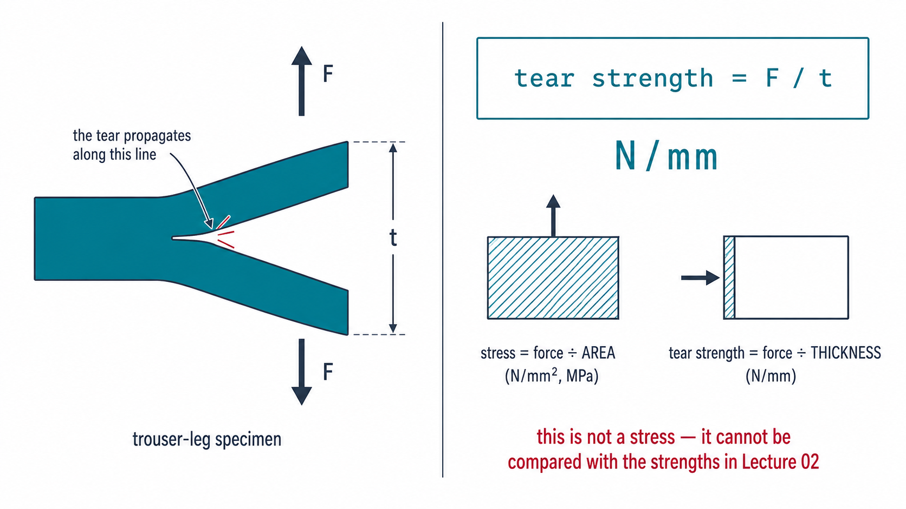
Force divided by a thickness, not by an area — which is why it is not a stress.
Property 7 · Example
A plastic bag tears the same way
The distinction the property is really about.
Before the nick
- The bag carries a heavy load without complaint.
- The force is spread across the whole width of the material.
- It feels strong, and it is.
After the nick
- The same load now runs a tear straight across it.
- All the force is concentrated at one point — the tip of the tear.
- Nothing about the material changed.
InterpretationWhat tear strength describes is resistance to the tear spreading — not resistance to the first pull. This is why a material can be strong in every other sense and still fail here.
Property 7 · Example
Where an impression tears
Not at random: at the two places where the material is thinnest, which are the two places the margin is.
- The sulcular collar. The thin sleeve of material that ran down into the gingival sulcus. It is the thinnest material in the whole impression, and it carries the margin.
- The interproximal web. The narrow membrane of material squeezed between two adjacent teeth.
- A torn impression is not always obvious. The torn fragment can stay behind in the sulcus, leaving an impression that looks smooth and complete and is simply missing its margin.
Practical consequenceTear strength is not a bench property. It decides whether the one feature the impression was made for survives the journey out of the mouth.
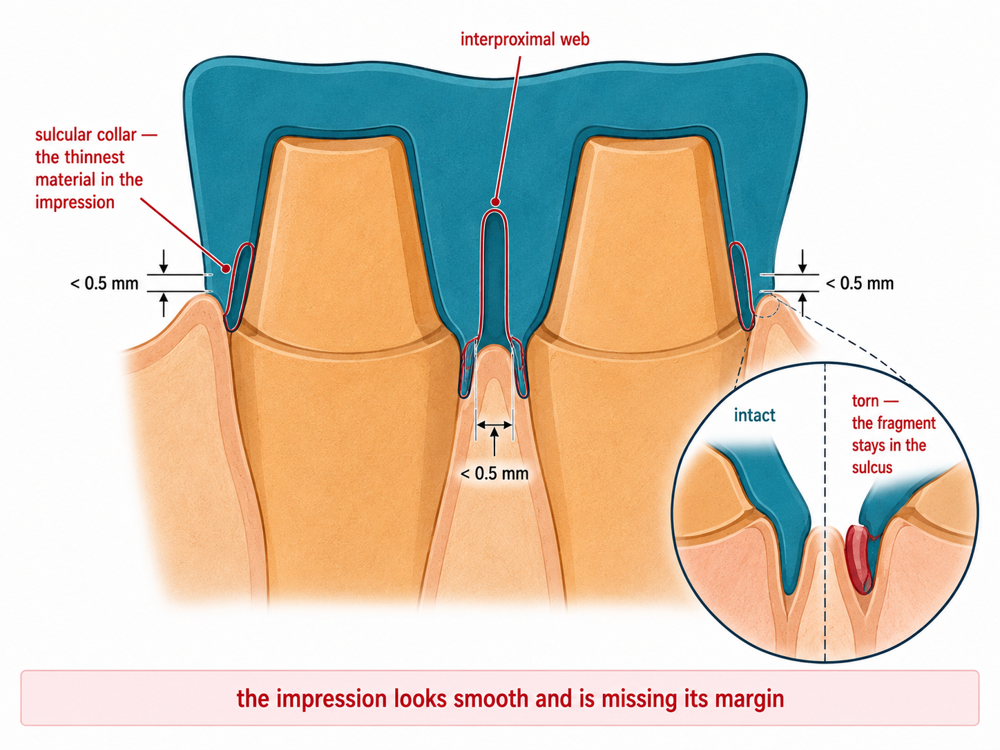
The two thinnest regions of the impression are the two that carry the margin.
Property 7 · Mechanism
Why the impression is removed with one quick movement
A clinical instruction that follows directly from the physics of the material.
- These materials are viscoelastic: part liquid, part solid. Their response depends on how fast they are loaded.
- Loaded slowly, the liquid character dominates. Chains have time to slide past each other: the material flows, deforms more, and tears at a lower force.
- Loaded rapidly, the solid character dominates. There is no time for chains to slide, so the material behaves elastically: it resists tearing and recovers more of its shape.
- Easing an impression out slowly therefore does the opposite of what it feels like it does — it maximises both tearing and permanent deformation.
General ruleThe same viscoelastic behaviour explains three of the properties in this group: why working time ends when elastic behaviour begins, why some deformation is never recovered, and why removal speed changes the result. One material behaviour, three properties.
Methodological limitationThe direction of this effect is well described in the literature, but the primary experimental source for the magnitude has not yet been located. Presented here as a mechanism, without a number.
Group 4 of 4
04
After the impression leaves the mouth
Dimensional change and stability· Accuracy: trueness and precision
Property 8 · Definition
Linear dimensional change
One number, measured at one moment.
Linear dimensional change
The change in a measured length between the moment the material sets and a defined later moment, expressed as a percentage.
DefinitionMeasured by comparing a line in the test block with the same line in the set material after 24 hours, at controlled temperature and humidity.
ISO 4823, clauses 5.6 and 7.5.
InterpretationThis is a quality gate, not a description of clinical behaviour. It asks whether the material has moved too far by one arbitrary moment. It says nothing about the path it took to get there, or where it goes next.
Property 8 · Definition
Dimensional stability
Not a number. A curve, with a direction.
Dimensional stability
The tendency of a material to hold its dimensions over time. Described by a curve of percentage change against hours — and the curve has a sign: shrinkage or expansion.
- Two materials can pass the same 24-hour test and drift in opposite directions along the way.
- One can be measured; the other has to be plotted. A data sheet quoting a single percentage has answered only the first question.
Practical consequenceThis is why when the cast is poured is a decision about the material, not about the laboratory's schedule. Part 3 of this lecture gives the curve for each family.
Property 8 · Mechanism
Three reasons a set material changes size
The set impression is not inert. Three different processes continue after it has left the mouth.
Cross-linking continues
Reaction does not stop the moment the material feels solid. Chains keep bonding to each other and are pulled closer together. The material shrinks.
A by-product leaves
Some setting reactions release a small molecule — ethanol, or water. It evaporates out of the set material, which loses exactly the volume of what escaped and shrinks. This is the condensation reaction from Lecture 03.
Water moves in or out
A material that is a water-based gel exchanges water with its surroundings. Losing water is syneresis, and it shrinks; gaining water is imbibition, and it expands.
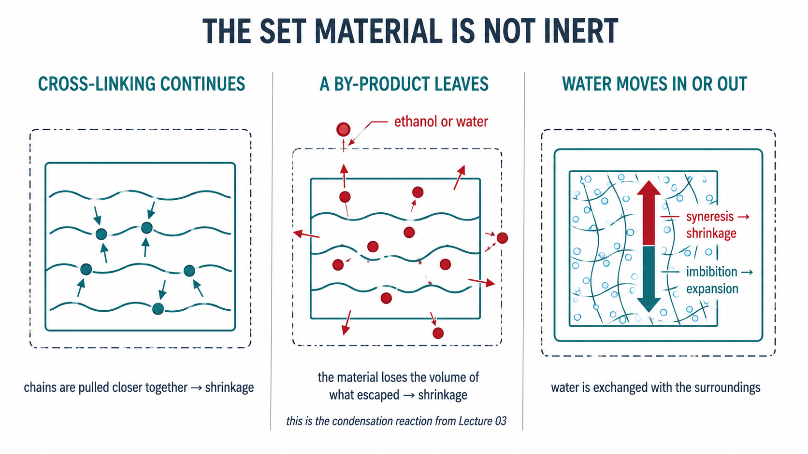
Three different processes, two directions of change.
Property 8 · Example
A sponge on the bench
The third mechanism, at a scale that can be seen.
Left out to dry
- Water evaporates from the gel.
- The sponge shrinks and stiffens.
- Nothing was made badly — it is exchanging water with the room.
Put back in water
- Water is drawn back into the gel.
- The sponge swells.
- The same material, moving in the opposite direction.
Important qualificationThe mechanism is the same in an alginate impression; the scale is not. A sponge changes size by an amount anyone can see. An impression changes by a fraction of a per cent — and, as the worked example in Group 3 showed, a fraction of a per cent is already tens of micrometres.
Property 9 · Definition
Trueness
The first of the two components of accuracy.
Trueness
How close the average of many measurements lies to the true value of the object being measured.
- In one phrase: where the group sits.
- Poor trueness means being wrong in a consistent direction. Every impression is displaced the same way.
ISO 5725-1.
InterpretationA material that shrinks by the same amount every single time has poor trueness — and perfect consistency. It is wrong, reliably.
Property 9 · Definition
Precision
The second component, and entirely independent of the first.
Precision
How close repeated measurements lie to each other, whether or not they are right.
- In one phrase: how tight the group is.
- Poor precision means being unpredictable from one impression to the next, even if the average is correct.
ISO 5725-1.
InterpretationAn average is a property of a set of impressions. The patient receives one. This is why a material cannot be judged on trueness alone.
Property 9 · Definition
Accuracy
The word that covers both, and is meaningless without them.
Accuracy
The term covering trueness and precision together. A material is accurate when it is close to the truth and repeats itself. Accuracy has two components; it is not the sum of two numbers.
InterpretationWithout this distinction, the sentence “addition silicone is the most accurate material” carries no information. With it, the claim becomes testable: more true (less systematic drift) and more precise (less scatter between impressions).
ISO 5725-1. The same pair of terms returns in Lecture 14 (CAD/CAM) and Lecture 20 (degradation).
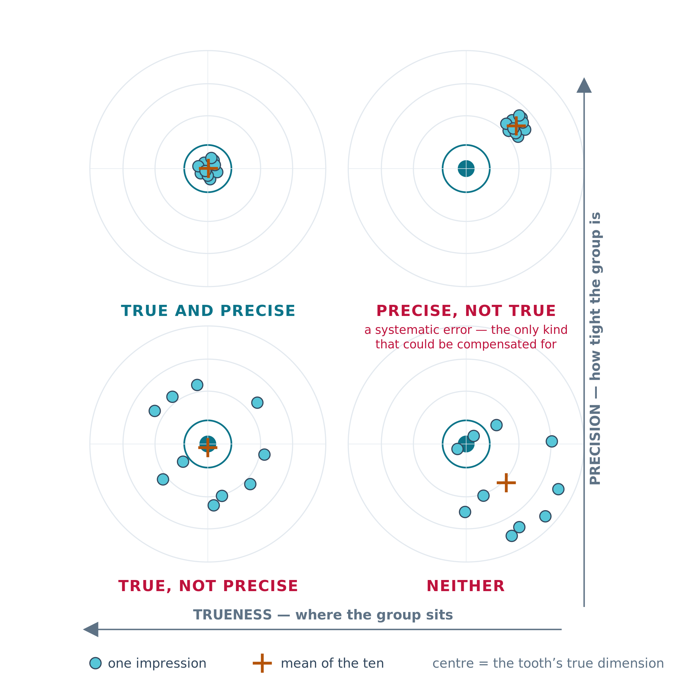
Where the group sits, and how tight the group is.
Property 9 · Example
The one error that could be corrected
The two components fail differently, and only one of them can be compensated.
Precise, not true
- The material shrinks by the same small amount every time.
- The error is systematic: same size, same direction.
- Because it is predictable, it can in principle be corrected — by making the die deliberately larger by that amount.
- This is why some laboratory procedures build in a compensating expansion.
True, not precise
- The material is right on average and different every time.
- The error is random: unknown size, unknown direction.
- Nothing can be corrected, because the next impression cannot be predicted from the last one.
- The average is a property of the set; the patient receives one impression.
General ruleBetween a material that is reliably wrong and one that is unreliably right, the first is the more workable problem. This is a general principle of measurement, and it returns whenever accuracy is discussed in this course.
Summary
The nine properties, and the question each one answers
Every definition in this section is written in an international standard. The clause is given so it can be looked up rather than recalled.
| # | Property | The question it answers | When it acts | Defined in | Required? |
|---|
| 1 | Consistency | How thick is the mixed paste? | Before setting | ISO 4823, 3.1 | yes — sets the type |
| 2 | Working & setting time | How long can it be shaped, and when is it safe to remove? | Before setting | ISO 4823, 3.11 · 5.4 | as declared by maker |
| 3 | Wettability | Does it spread over a moist surface? | Before setting | — measured as contact angle | no |
| 4 | Detail reproduction | What is the finest line it can copy? | While recording | ISO 4823, 5.5 · 7.4 | yes |
| 5 | Elastic recovery & permanent deformation | How much of its shape does it get back — and how much not? | During removal | ISO 4823, 3.2 · 7.7 | yes |
| 6 | Strain in compression | How much does it give under load? | During removal | ISO 4823, 3.10 · 7.8 | yes — as a range |
| 7 | Tear strength | What force tears it where it is thinnest? | During removal | ISO 21563 (alginate) | not by ISO 4823 |
| 8 | Dimensional change & stability | Does the record hold, and in which direction does it drift? | After removal | ISO 4823, 5.6 · 7.5 | yes — at 24 h |
| 9 | Accuracy: trueness + precision | Is it close to the truth, and does it repeat? | After removal | ISO 5725-1 | metrology term |
Where this leads. Part 3 of this lecture places five materials against these nine rows. Nothing in that table will be a new property — only new values for properties already defined here.
Part 2
02
The four elastomers
Polysulphide· Polyether· Condensation silicone· Addition silicone
Four rubbers that all set by cross-linking, and differ in one thing the operator never sees: what the reaction leaves behind.
Part 2 · The organising question
What the setting reaction leaves behind
Every one of the four turns a paste into a rubber by tying chains to each other. The question that separates them is whether that reaction also makes a small molecule that has to get out.
| Material | Does the reaction make a by-product? | What leaves, and what it costs |
|---|
| Polysulphide | Yes | Water. It evaporates over hours and the impression shrinks slowly. |
| Polyether | No | Nothing leaves — but the set rubber takes water in, and swells. |
| Condensation silicone | Yes | Ethanol. It evaporates faster than water: the largest shrinkage of the four. |
| Addition silicone | No | Nothing leaves and nothing enters. The most stable of the four. |
Read the table as a prediction, not as a list. Knowing only the answer in the middle column, it is possible to predict how long the impression can wait before pouring and whether the cast can be poured twice. The direction of the error — die larger or smaller than the tooth — needs one more fact, which comes with the polysulphide.
Part 2 · Chemistry in one screen
The four backbones, side by side
Four chains drawn identically. The only difference is the group at the end.
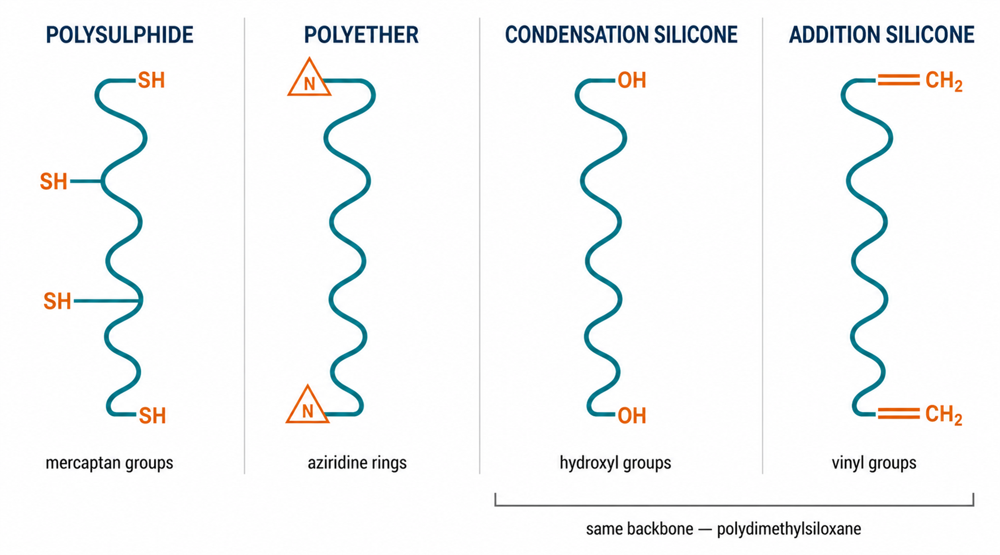
The two silicones share one backbone and differ only in the end group — hydroxyl against vinyl. That single difference is the whole reason one releases ethanol and the other releases nothing.
Part 2 · Chemistry in one screen
The same four, as a table
The chain that carries the material, the group at the end of it, and what sets it off.
| Material | Main chain | Reactive group | What triggers the set |
|---|
| Polysulphide | Polysulphide (–S–S–) chain | Mercaptan, –SH | Lead dioxide oxidises the –SH groups |
| Polyether | Polyether chain | Aziridine ring (imine) at the ends | An aromatic sulphonate ester opens the rings |
| Condensation silicone | Polydimethylsiloxane | Hydroxyl, –OH (silanol) | Tetraethyl silicate ties three chains together |
| Addition silicone | Polydimethylsiloxane | Vinyl and Si–H | A platinum catalyst adds Si–H across the vinyl bond |
Van Noort R. Introduction to Dental Materials, ch. 2.7, figures 2.7.6 to 2.7.13.
Polysulphide · Identity
Polysulphide
The first elastomer to reach dentistry, and still the toughest of the four.
- Supplied as two pastes in collapsible tubes: a white base and a brown catalyst, mixed on a pad.
- The brown colour is lead dioxide, the oxidising agent that drives the reaction. It stains clothing permanently.
- Only light and heavy body — there is no putty version, so it needs a custom tray.
- Distinctive smell. The mercaptan groups are chemically related to the compounds added to natural gas to make leaks detectable.
Base and catalyst pastes, and the mixed material. The brown comes from lead dioxide.
Polysulphide · Chemistry
The polysulphide reaction makes water
Two things happen at once, and the second one is what turns paste into rubber.
Chain lengthening
The mercaptan groups at the ends of the chains are oxidised and join, so short chains become long ones. The paste thickens.
Cross-linking
Mercaptan groups along the chains react too, tying neighbouring chains together. This is what makes it elastic rather than merely viscous.
Water is released
The oxidation produces water as a by-product. It stays in the set rubber and evaporates slowly over the following hours.
Van Noort, figures 2.7.6 and 2.7.7. The reaction is exothermic, raising the temperature by about 3 to 4 °C.
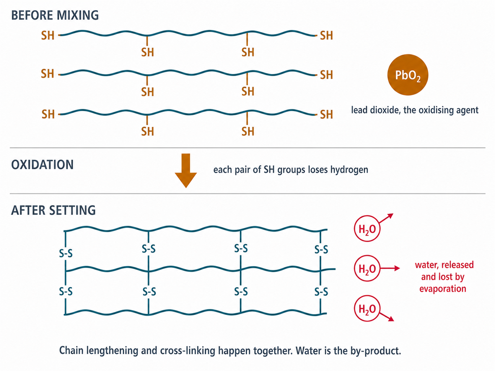
Three separate chains at the top, one connected net at the bottom. The three molecules on the right are what has to leave.
Polysulphide · Consequence
Consequence: the impression shrinks as it dries
The by-product does not stay. What matters is which way the impression moves as it goes.
MechanismLosing water means the material shrinks as it dries, and it shrinks towards the tray it is glued to. The cavity therefore gets slightly wider, and the die poured from it comes out slightly larger than the tooth.
Practical consequenceA die that is slightly too large leaves room for the cement, which is not a disaster. But the drift continues, so the cast must be poured within about an hour, and the impression must never be stored in a dry place.
This is the extra fact promised at the start of Part 2. Now the direction of the error is predictable, not just its size.
Polysulphide · Reference
Polysulphide: typical values
Kept in the course because it holds both extremes: the toughest material and the one that recovers worst.
| Property | Typical value |
|---|
| Working time | 4 to 6 min — the longest of the four |
| Setting time in the mouth | 12 to 16 min — the longest of the four |
| Elastic recovery | 97 to 98% — the lowest of the four |
| Permanent deformation | 2 to 3% — the highest of the four |
| Contraction at 24 h | about 0.25% |
| Thermal contraction | 270 ppm/°C |
| Contact angle of water | 82° |
| Consistencies | light and heavy body only — no putty |
Times: Phillips' Science of Dental Materials, table 8-3 (37 °C). Contact angle and thermal contraction: Van Noort. Recovery: consensus range across textbook sources.
Read the two extremes togetherThe longest times, the worst recovery and the highest permanent deformation all come from the same fact: this is the softest and slowest of the four. The same softness is what gives it the highest tear strength.
ConsequenceSoftness is why it needs a custom tray: with nothing rigid holding the record, the tray has to supply the stiffness the material lacks.
Polysulphide · Reference
Polysulphide: uses and trade-offs
Why it survives
- The highest tear strength of any impression material.
- Wets the tissues well — better than any silicone.
- Long working time suits large, slow cases.
- Cheaper than addition silicone.
Why it is rarely used
- The worst elastic recovery of the four.
- Unpleasant smell and taste; stains clothing.
- Needs a custom tray and a long time in the mouth.
- Must be poured within the hour.
ApplicationsComplete dentures, and any situation where a tear in a thin section is the main risk. Not recommended for crown and bridge work today.
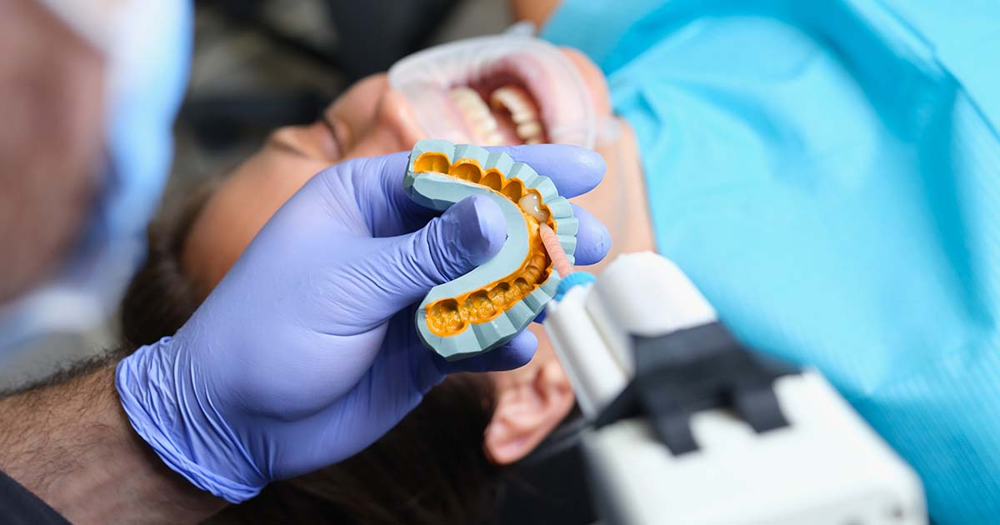
A seated tray. The long setting time of polysulphide is spent exactly like this.
Polyether · Identity
Polyether
The only impression material developed specifically for dentistry, launched at the end of the 1960s.
- Two pastes, base and catalyst (often called the accelerator), in equal proportions — now usually in cartridges with an automatic mixing tip.
- Historically a single viscosity, thinned with a separate softening liquid when a light body was needed. Modern versions come in light, medium and heavy body.
- The only hydrophilic elastomer by nature — the others need a surfactant added to come close. A surfactant is a molecule with a water-liking end and an oil-liking end; sitting at the surface, it lets water spread instead of beading.
- A single mix in a stock tray is often enough, which is a large part of why it became popular.
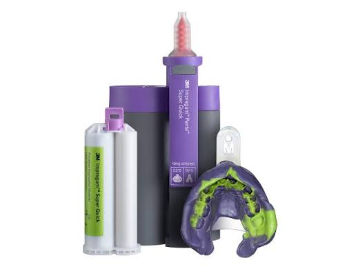
Cartridge system with automatic mixing, and the resulting impression.
Polyether · Chemistry
The polyether reaction makes nothing
A ring at the end of each chain opens and attacks the next chain. No small molecule is produced.
The chains carry aziridine rings
Each polyether chain ends in a three-membered ring containing nitrogen — an aziridine ring. A ring that small is strained, and that stored strain is what makes it spring open. (The dental literature calls it an imine group, which is not strictly correct.)
An initiator opens the rings
An aromatic sulphonate ester attacks the ring, which springs open and becomes reactive.
The opened ring attacks the next chain
Cross-links form directly between chains. Nothing is left over — every atom that was in the paste is still in the rubber.
Van Noort, figures 2.7.8 and 2.7.9. Ring-opening cationic polymerisation.
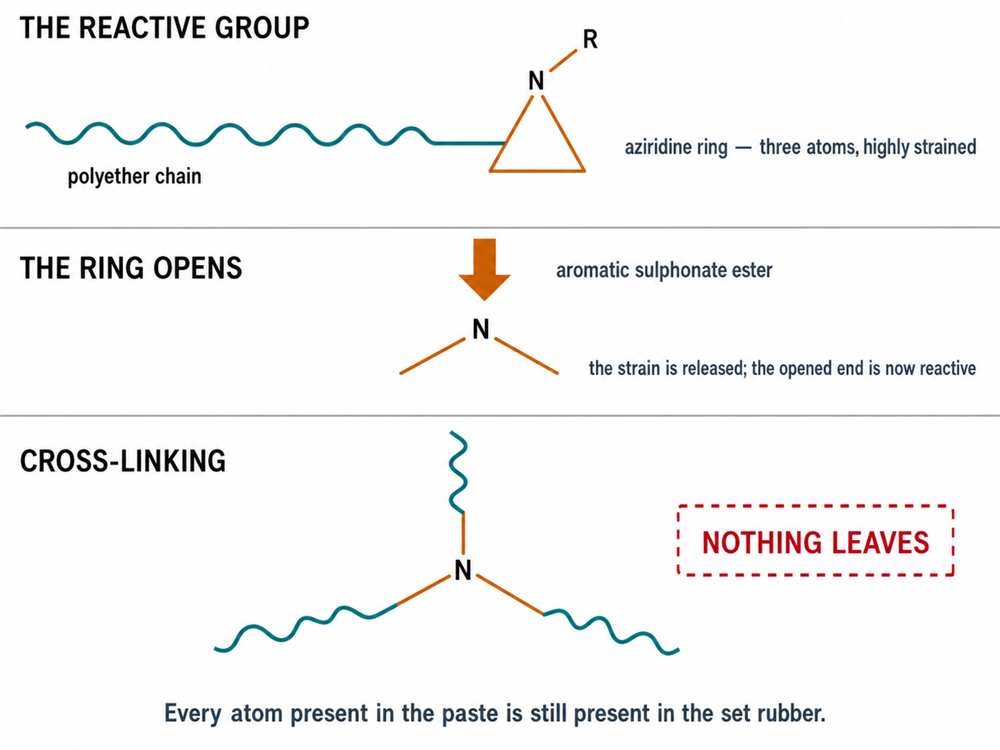
The ring opens and three chains meet at one nitrogen. The dashed box marks what is not there.
Polyether · Consequence
Consequence: good dimensional stability
MechanismNo by-product means no shrinkage from something leaving. This is why polyether has good dimensional stability, and why it can be poured more than once.
And yetA material that loses nothing should be perfectly stable. The polyether is not, and the reason is on the next slide.
Polyether · Consequence
Polyether has no by-product, and still moves
The property that makes it pleasant to use is the same property that makes it vulnerable.
What the polarity buys
- Contact angle of 49° — wets a moist preparation better than any other elastomer.
- Gypsum flows into it easily, so fewer bubbles in the cast.
- Records detail well in a field that is never perfectly dry.
What the polarity costs
- The set rubber absorbs water and swells. This is imbibition, the same process met in the alginate slide of Part 0 — here driven by the polarity of the chain rather than by a water-based gel.
- A swollen impression gives a die smaller than the tooth, and the crown will not seat.
- Store dry. Do not leave in disinfectant longer than instructed.
- Never store next to an alginate impression — the polyether pulls the water out of it.
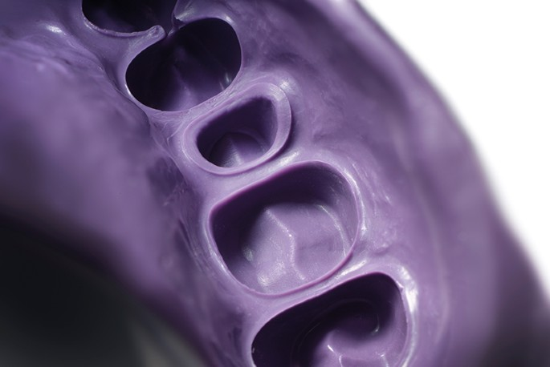
A polyether impression. Detail reproduction is excellent; the risk is what happens after it leaves the mouth.
Polyether · Reference
Polyether: typical values
Typical values quoted across standard textbooks.
| Property | Typical value |
|---|
| Working time | 2.5 to 3.5 min |
| Setting time in the mouth | 8 to 9 min |
| Elastic recovery | 97 to 99% |
| Permanent deformation | 1 to 3% |
| Contraction at 24 h | about 0.2 to 0.3% |
| Thermal contraction | 320 ppm/°C — the highest of the four |
| Contact angle of water | 49° — the lowest of the four, the best wetting |
| Rigidity | traditionally the most rigid; the newer soft versions are not |
Times: Phillips' table 8-3 (37 °C). Contact angle and thermal contraction: Van Noort. Rigidity: see the slide on the ordering that aged.
NoteThe high thermal contraction is easy to miss because it has nothing to do with the setting reaction. The impression simply cools from mouth temperature to room temperature, and polyether shrinks more per degree than the others.
Polyether · Reference
Polyether: uses and trade-offs
Advantages
- Hydrophilic — the best wetting of the four.
- Good dimensional stability; casting can be delayed and repeated.
- Good elastic recovery and good compatibility with gypsum.
- Works as a single mix in a stock tray.
- Can be added to already-set material for a corrective impression.
Disadvantages
- Rigid and hard to remove, especially over multiple abutments.
- Expands in a humid store or in prolonged disinfection.
- Tear strength is better than the silicones, but the stiffness means a thin sulcular tag is more likely to be torn than stretched out.
- Sulphonate esters may cause an allergic reaction.
- Expensive.
ApplicationsCrown and bridge work, particularly across several preparations, where its stiffness is an advantage rather than a nuisance. Implant impressions. Border moulding in complete dentures. Indirect inlays and onlays.
Brizuela M, Ali Z. Dental Impression Materials. StatPearls, NCBI Bookshelf NBK574496, 2023. Van Noort, table 2.7.8.
Condensation silicone · Identity
Condensation silicone
The cheapest of the elastomers, and the one that pays for it in dimensional stability.
- Base and catalyst, supplied as putty in jars and as pastes in tubes; the catalyst may be a liquid.
- Two different substances are involved, and both are consumed: tetraethyl silicate, which ties the chains together, and a tin compound that drives the reaction. Neither is a catalyst in the strict sense — unlike the platinum of the addition silicone, they are used up.
- The proportion is critical. Too little cross-linker and the network never completes, leaving the material soft and weak. Too much and unreacted arms are left in the set rubber, where they keep reacting and keep releasing ethanol.
- Wide range of viscosities, from extra-light to putty, so many techniques are possible.
- Mixing is harder than in the other systems, because base and catalyst differ so much in viscosity.
A typical kit: putty in a jar with its catalyst, and a wash material in a tube.
Condensation silicone · Chemistry
The condensation reaction makes ethanol
The same reaction family met in Lecture 03 — cross-linking that expels a small molecule.
The chains end in hydroxyl groups
Polydimethylsiloxane with an –OH at each end. On its own it is a viscous liquid.
Tetraethyl silicate ties three chains together
It has four reactive arms, so it can join three or more chains into a network. Two arms would only make the chain longer, not elastic.
Ethanol is expelled
Each bond formed releases one molecule of ethyl alcohol, which then evaporates out of the set rubber.
Van Noort, figures 2.7.10 and 2.7.11.
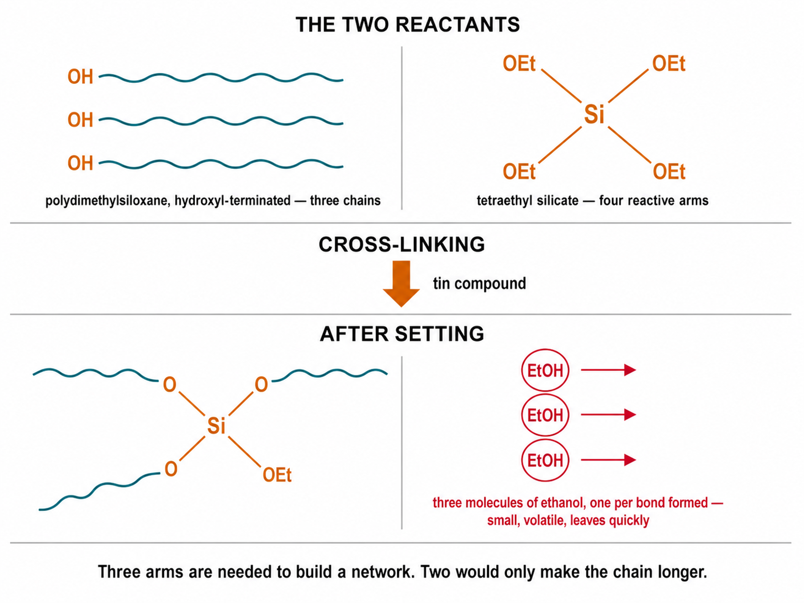
Three of the silicate’s four arms react. The fourth is still unreacted after setting — look for it bottom right.
Condensation silicone · Consequence
Consequence: the largest contraction of the four
The same argument as the polysulphide, with a smaller and faster molecule.
MechanismEthanol is small and volatile — it leaves faster and more completely than the water released by polysulphide. That is the whole reason condensation silicone has the largest contraction of the four.
Practical consequencePour the cast as soon as the material has recovered elastically, which is roughly 30 minutes to one hour after removal. Waiting until the next day gives a measurably wrong cast.
Condensation silicone · Reference
Condensation silicone: typical values
| Property | Typical value |
|---|
| Working time | 2.5 to 3.5 min |
| Setting time in the mouth | 8 to 11 min |
| Elastic recovery | about 99% |
| Permanent deformation | about 1% |
| Contraction at 24 h | 0.4 to 0.6% — the highest of the four |
| Thermal contraction | 200 ppm/°C |
| Contact angle of water | about 98° — hydrophobic, like the addition silicone |
| Consistencies | extra-light to putty |
Times: Phillips' table 8-3 (37 °C). Thermal contraction: Van Noort. Contraction at 24 h: consensus range across textbook sources.
NoteNote the pattern: good elastic recovery and poor dimensional stability at the same time. The two properties are independent, and this material is the clearest proof of it — it springs back accurately from the undercut, and then shrinks quietly on the bench.
Condensation silicone · Reference
Condensation silicone: uses and trade-offs
Advantages
- The cheapest elastomer.
- Good surface detail on a dry surface.
- Low permanent deformation.
- Wide range of viscosities.
- Easy to disinfect; well accepted by patients.
Disadvantages
- Storage contraction — the cast must be poured within the hour.
- Hydrophobic: the field must be dry.
- The lowest tear strength of the four — thin subgingival extensions are the first thing to go.
- Mixing is less uniform than in the other systems.
- Setting can be erratic if the catalyst has absorbed moisture.
ApplicationsStudy models, provisional work, and situations where cost matters more than the extra tens of micrometres. Acceptable for single units if the cast is poured promptly. Not the material of choice for multiple preparations or for impressions that will be posted.
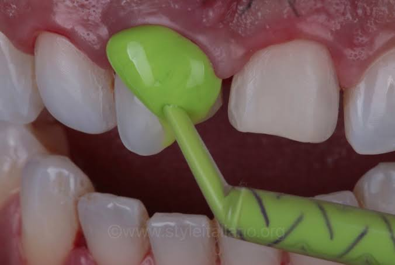
Light body syringed around the margin, ahead of the tray material.
Addition silicone · Identity
Addition silicone
Also called polyvinyl siloxane, or PVS. The most widely used material in fixed prosthodontics.
- Base and catalyst in equal volumes, almost always dispensed through a gun with an automatic mixing tip.
- Every consistency is available, from extra-light to putty, so any technique is possible.
- The automix system was a real advance: it fixes the proportions, removes mixing bubbles and wastes less material.
- Naturally hydrophobic. The versions sold as hydrophilic have a surfactant added to the surface, not a different polymer.
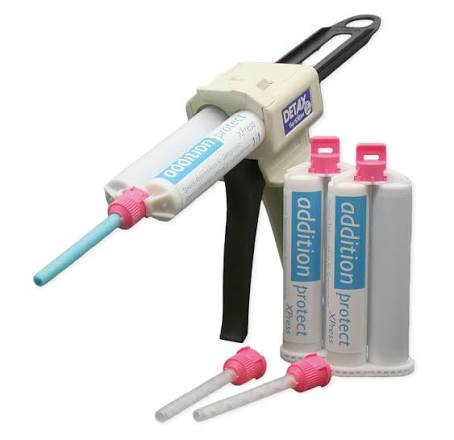
Dispensing gun, cartridge and mixing tips — the standard presentation.
Addition silicone · Chemistry
The addition reaction makes nothing
The same backbone as the condensation silicone, and a different group at the end of the chain. That is the entire difference.
One paste carries vinyl groups
Polydimethylsiloxane ending in a vinyl group, a carbon–carbon double bond.
The other carries Si–H groups
A silicone with silicon–hydrogen bonds, which will act as the cross-linker.
Platinum adds one across the other
A platinum catalyst adds the Si–H group across the vinyl double bond. The two chains become one connected network and nothing is expelled.
Van Noort, figures 2.7.12 and 2.7.13. This is the addition polymerisation of Lecture 03, and the slide before was the condensation — the same pair, in the same order.
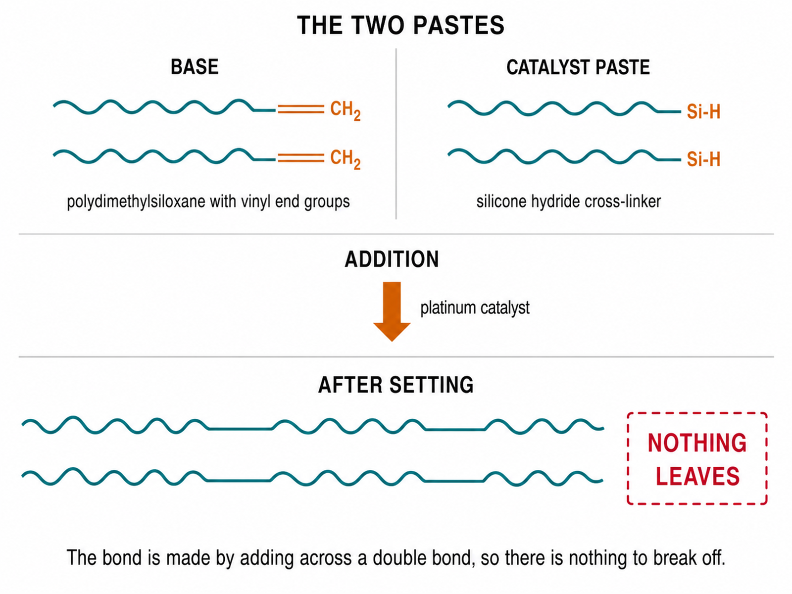
In the bottom band each chain now runs the full width: two chains have become one, and the double bond has gone.
Addition silicone · Consequence
Consequence: the impression can be stored and re-poured
Same backbone as the slide before. Opposite outcome, from one group at the end of the chain.
MechanismCompare with the condensation silicone: it had to break off an ethanol molecule to make each bond. Here the bond is made by adding across a double bond, so there is nothing to break off. Same chain, opposite consequence.
Practical consequenceNothing leaves and nothing enters, so the impression can be posted to the laboratory, poured days later, and poured more than once from the same impression.
Addition silicone · Reference
Addition silicone: typical values
| Property | Typical value |
|---|
| Working time | 2 to 3 min — the shortest of the four |
| Setting time in the mouth | 6 to 9 min — the shortest of the four |
| Elastic recovery | 99% and above — the highest of the four |
| Permanent deformation | below 1% — the lowest of the four |
| Contraction at 24 h | about 0.05% — the lowest of the four |
| Thermal contraction | 200 ppm/°C |
| Contact angle of water | 98° without surfactant; close to polyether with it |
| Consistencies | extra-light to putty — all of them |
Times: Phillips' table 8-3 (37 °C). Contact angle and thermal contraction: Van Noort. Recovery and contraction: consensus range across textbook sources.
NoteRead the first two rows together with the polysulphide sheet: the two materials sit at opposite ends of every time in the table. The addition silicone sets in about half the time the polysulphide needs, which is convenience, not accuracy.
Addition silicone · Reference
Addition silicone: uses and trade-offs
Advantages
- Excellent dimensional stability — can be stored, posted and poured more than once.
- The best elastic recovery of the four.
- Short setting time.
- Automix removes proportioning and mixing errors.
- Wide range of viscosities; easy to disinfect.
Disadvantages
- Hydrophobic unless a surfactant has been added — the field must be dry.
- Low tear strength, and the short set leaves little room to recover from a slow, hesitant removal.
- Sulphur poisons the platinum catalyst: contact with latex gloves can stop it setting.
- The most expensive of the four.
- Very stiff putties can be difficult to remove.
ApplicationsCrowns, bridges and implant impressions — the default choice in fixed prosthodontics. Occlusal registration. Any case where the impression will travel or the cast will be poured more than once.
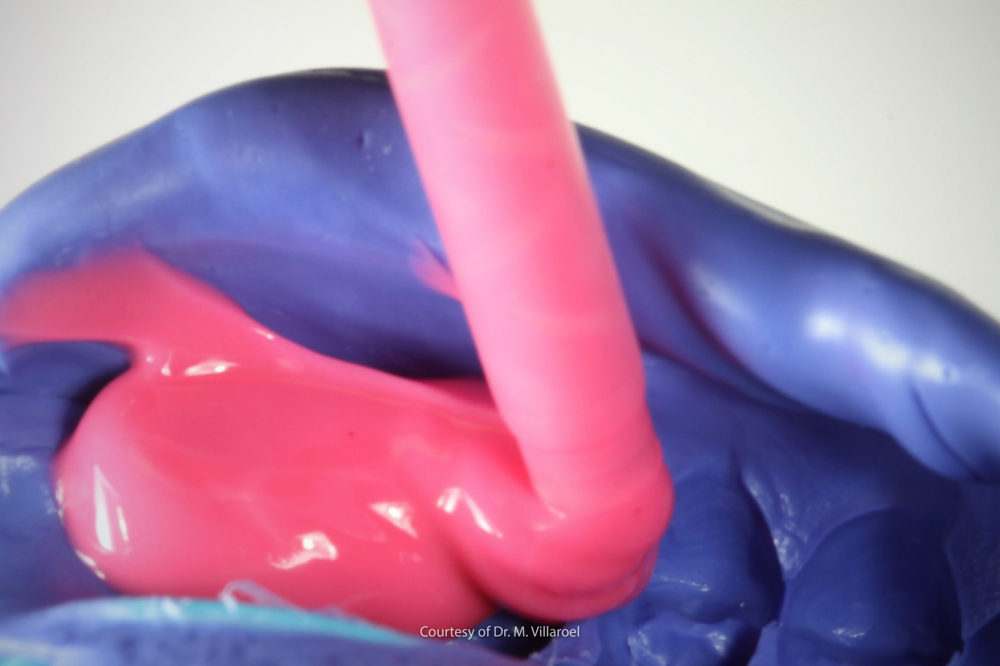
Wash material syringed over set putty in the two-stage technique.
Comparison · Rankings
Property rankings across the four materials
Each row is ordered from least to most. What matters is the label saying whether more is better.
| Property | More is… | Least → most |
|---|
| Permanent deformation | more is WORSE | addition → condensation → polyether → polysulphide |
| Tear strength | more is BETTER | silicones → polyether → polysulphide |
| Setting contraction | more is WORSE | addition → polyether ≈ polysulphide → condensation |
| Thermal contraction | more is WORSE | silicones (200) → polysulphide (270) → polyether (320 ppm/°C) |
| Contact angle | a SMALLER angle is better | polyether (49°) → polysulphide (82°) → addition and condensation (~98°) |
| Rigidity | too soft distorts, too stiff fractures the die | polysulphide → condensation → addition → polyether — but see the next slide |
Comparison · Values
The four materials side by side
Typical values, as quoted across standard textbooks. The exact figure belongs to the product, not to the family.
| Property | Polysulphide | Polyether | Condensation | Addition |
|---|
| By-product | water | none | ethanol | none |
| Working time (min) | 4–6 | 2.5–3.5 | 2.5–3.5 | 2–3 |
| Setting in the mouth (min) | 12–16 | 8–9 | 8–11 | 6–9 |
| Elastic recovery (%) | 97–98 | 97–99 | ~99 | 99+ |
Permanent deformation (%)
the same measurement as the row above, from the other end: the two add to 100% | 2–3 | 1–3 | ~1 | <1 |
| Contraction at 24 h (%) | ~0.25 | 0.2–0.3 | 0.4–0.6 | ~0.05 |
Thermal contraction (ppm/°C)
millionths of its length lost per °C of cooling | 270 | 320 | 200 | 200 |
| Contact angle (°) | 82 | 49 | ~98 | 98 |
| Tear strength | highest | intermediate | lowest | low |
| When to pour | within 1 h | can wait — if kept dry | within 1 h | days; more than once |
| Relative cost | low | high | lowest | highest |
Working and setting times measured at 37 °C by oscillating rheometer: Phillips' Science of Dental Materials, 12th ed., table 8-3. Contact angles and thermal contraction: Van Noort, ch. 2.7. Recovery and 24 h contraction: consensus ranges across textbook sources; the ISO 4823 minimum for elastic recovery is 96.5%, which all four exceed. Tear strength is given as the agreed ranking rather than a number, because the published values overlap heavily between products: silicones < polyether < polysulphide (Craig RG. Review of dental impression materials. Adv Dent Res 1988;2:51-64).
Comparison · Qualification
Polyether rigidity: textbook ranking versus measurements
Polyether is classified as the most rigid of the elastomers. Measurements on current products disagree.
What the textbooks say
- Polyether is the most rigid of the four, and that is why it is hard to remove.
- The ordering is given as polysulphide, then condensation, then addition, then polyether.
- Van Noort, Phillips and StatPearls all state it.
What recent measurements show
- The newer soft polyethers deform more under load than hydrophilic addition silicones, not less.
- Two independent studies report the same direction.
- StatPearls itself concedes it in brackets: "newer polyethers are slightly more flexible".
InterpretationThe ordering describes the traditional polyether. Manufacturers reformulated the material precisely because rigidity was its main complaint, and the table in the textbook did not follow. A ranking is a statement about the products that existed when it was measured.
Lu H, Nguyen B, Powers JM. J Prosthet Dent 2004;92(2):151-4. Pandey P et al. Contemp Clin Dent 2019;10(2):203-7.
Technique · Mixing
How the two pastes are brought together
Three systems are in use, and they do not carry the same risk of error.
- Hand mixing on a pad. The clinician judges the proportions and the spatulation. Air is folded in, and any error in the ratio changes the setting time and the final properties. Still used for polysulphide and for putties.
- Automatic mixing in a cartridge. Two barrels are pushed by one plunger, so the ratio is fixed by the geometry of the cartridge. The paste then passes through a static spiral inside the tip, which mixes it without folding in air.
- Machine mixing. The same principle in a bench unit, for large volumes of tray material.
Van Noort, ch. 2.7. The mixing tip is discarded with the set material still inside it, which seals the cartridge until the next use.
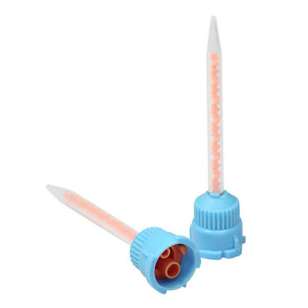
Static mixing tip: the two pastes are folded together by the fixed spiral, with no air incorporated.
Technique · Viscosities
Why two viscosities are used at once
The two jobs of an impression material are contradictory, so they are given to two different consistencies of the same material.
Light body — the wash
- Must flow into the sulcus and over the margin without trapping air.
- Syringed directly onto the preparation.
- Too weak on its own to hold its shape once out of the mouth.
Heavy body or putty — the tray material
- Must be stiff enough to push the wash into the sulcus.
- Must hold the whole record rigid during removal and during pouring.
- Too thick to record fine detail by itself.
Van Noort, ch. 2.7. The two are the same chemistry with different filler loading — more filler makes a stiffer paste.
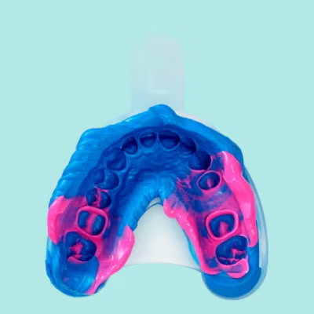
The finished impression: the wash records the preparation, the tray material carries it.
Trays · Definition
The tray is part of the measuring system
It is not a handle. It decides the direction in which the material shrinks.
- The material is glued to the tray. When it contracts, it cannot pull away from the tray, so it contracts towards it.
- The cavity therefore gets wider, and the die poured into it comes out slightly larger than the preparation. That happens to err in a forgiving direction, but it is not how cement space is created — that is done deliberately, with a die spacer.
- If the tray flexes, the record flexes with it, and there is no way to know by how much.
- If the adhesive fails, the material lifts away and the whole impression is lost, usually without any visible sign.
Van Noort, ch. 2.7 and figure 2.7.1: ideal contraction below 0.5%.
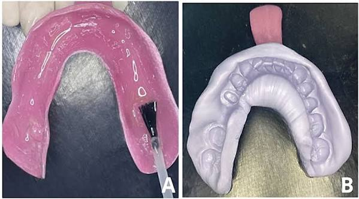
Adhesive painted on the tray and left to dry, then the loaded tray. The adhesive is specific to the material family — a silicone adhesive will not hold a polyether.
Trays · Comparison
Rigid and flexible trays
Rigid is better for accuracy, and the reason is worth stating rather than assuming.
Rigid tray — metal, or a custom acrylic tray
- Holds its shape while the tray is seated and while the gypsum is poured.
- A custom tray gives a uniform thickness of material, usually 2 to 3 mm.
- Less material means less total contraction.
- Cost: laboratory time for a custom tray; limited sizes for stock metal trays.
- Careful: a thin, close-fitting layer is less compressible, so removal past a deep undercut can be harder.
Flexible tray — plastic stock tray
- Bends while being seated, and springs back on removal — the record moves with it.
- Material thickness is uneven, so contraction is uneven.
- The direction of the error becomes unpredictable.
- Gain: cheap, disposable, immediately available.
- Acceptable for study models and for stiff materials in short spans.
General ruleThe stiffer the impression material, the less the tray matters — polyether and addition silicone tolerate a rigid stock tray. The more flexible the material, the more the tray has to compensate, which is why polysulphide has always required a custom tray.
Summary
Choosing between the four
Each material is the right answer to a different question.
PolysulphideWhen tearing is the riskThe toughest material, and the one that recovers worst. Complete dentures.
PolyetherWhen the field is moistThe best wetting, and rigid enough for several preparations. Keep it dry afterwards.
Condensation siliconeWhen cost decidesAccurate if poured within the hour. Study models and provisional work.
Addition siliconeWhen the record must keepThe default for crown and bridge. Post it, pour it twice, pour it late.
The single question that predicts the rest: does the setting reaction leave something behind? If it does, the record has a deadline. If it does not, the only remaining question is whether the material takes water in — and only the polyether does.